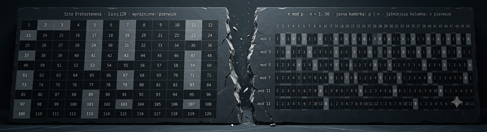
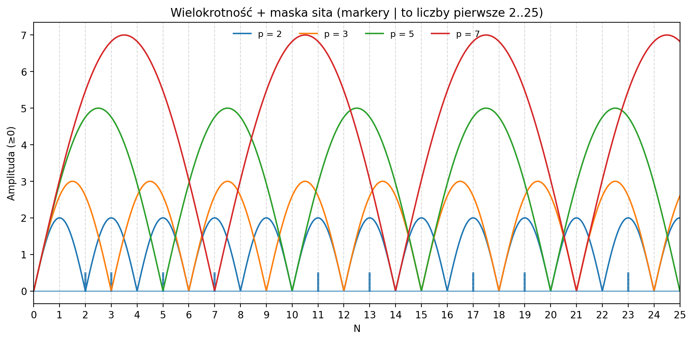
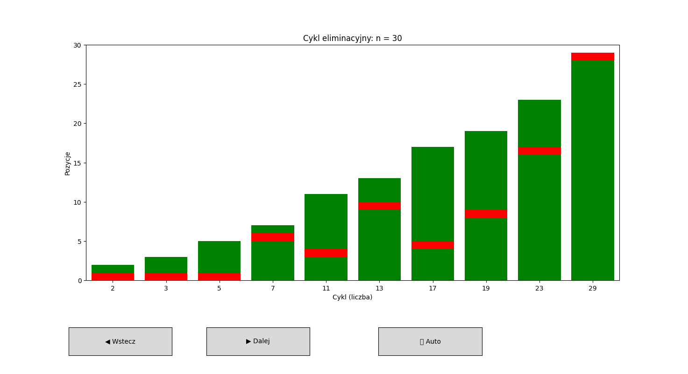
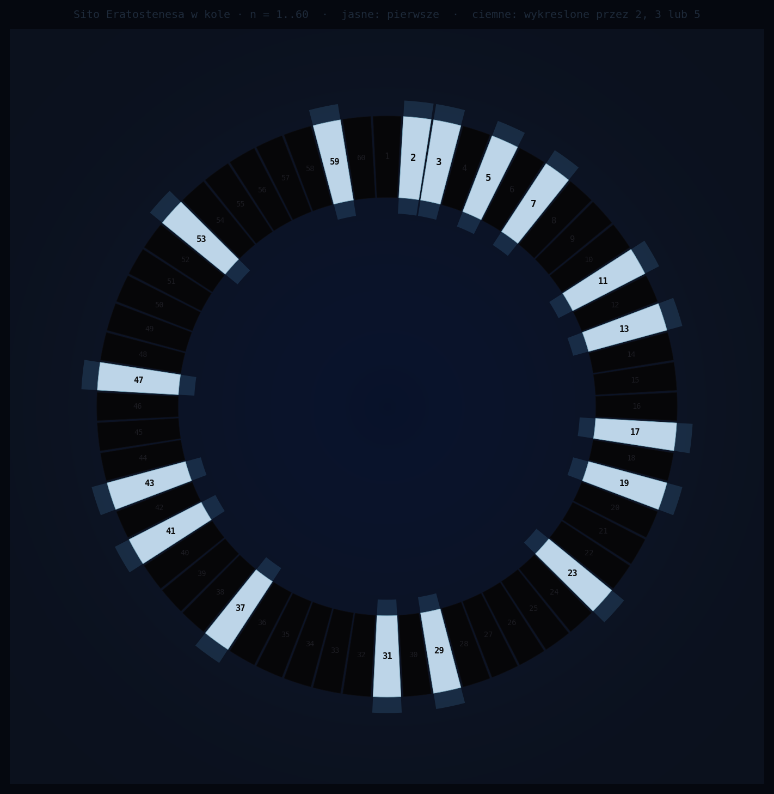

12 ≡ 2 (mod 5). To zdanie mówi coś o liczbie 12 — czy o tym, jak na nią patrzysz?
Zanim odpowiesz, cofnij się do podstaw. Tam zaczyna się pęknięcie.

Jest w tym coś dziwnego. Klasyczna teoria wie, że liczby pierwsze są atomami faktoryzacji — każda liczba złożona rozkłada się na nie jednoznacznie. Wie też, że pierwsza to taka, której nic nie dzieli. Ale nigdy nie pyta, dlaczego oba te opisy dotyczą dokładnie tych samych liczb. Używa obu naprzemiennie, jakby były oddzielnymi narzędziami. A może to dwa widoki jednego mechanizmu?
Ale co jeśli ta reszta należy do piątki — nie do siedemnastki?
Nałóż rytm mod 2 — eliminuje liczby parzyste. Nałóż mod 3 — eliminuje wielokrotności trójki. Każdy rytm dociera w swoje miejsca na osi liczbowej.


Miejsca, do których nie dotarł żaden rytm — są pierwsze. Nie dlatego że są specjalne. Dlatego że żaden cykl nie miał tam co robić.
Nikt nic nie zmienił. Te same liczby, te same wielokrotności, ta sama wykreślanka. Tylko kształt przestrzeni jest inny. I nagle coś, czego na prostej osi nie było widać — zaczyna być widoczne.

A jednak coś widać inaczej. Liczby pierwsze pojawiają się w tych samych miejscach co 30 pozycji dalej — bo tyle trwa jeden pełny cykl wszystkich trzech rytmów razem. Co pełne koło, ten sam wzorzec. Algorytm tego nie zakłada. Wzorzec po prostu jest.
To tylko zbieżność — czy to mówi coś o strukturze samej przestrzeni liczb?
To nie jest przejście do innego systemu. Te same liczby, ta sama oś. To zmiana perspektywy: z punktów widzianych jako izolowane wartości do punktów wynikających z relacji między nimi.
Rytm eliminacyjny, gęstość, rezonans, fala. Każda z tych perspektyw daje pełną odpowiedź na inne pytanie o liczby pierwsze. Razem tworzą spójny obraz strukturalnej teorii liczb.
Cztery Filary Porządku Liczbowego — pobierz PDF (140 stron)